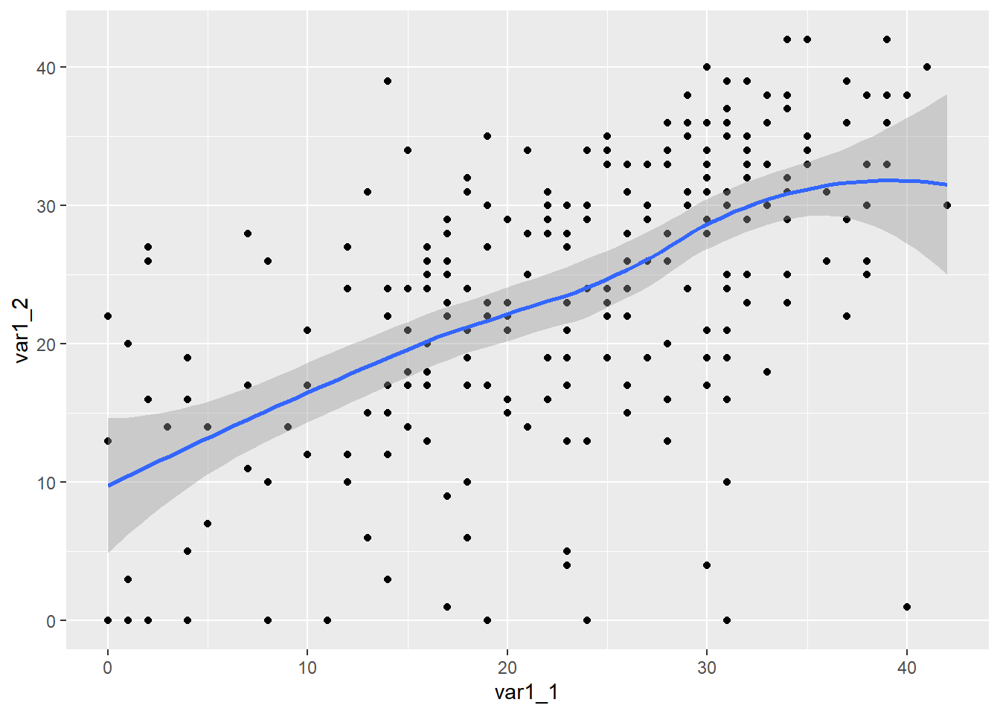
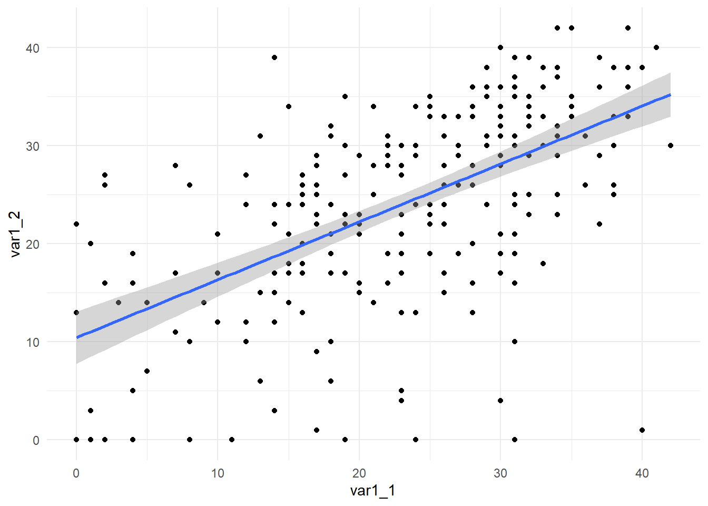
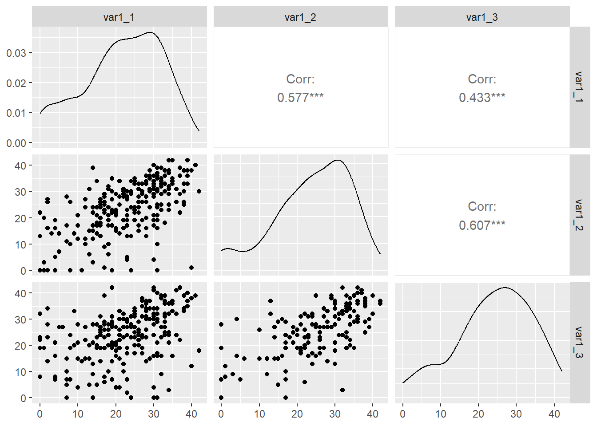

We will explore some ways to examine relationships among variables. The focus will be on using Pearson’s r correlation to examine linear relationships and presenting a correlation matrix as a table. We will also visualize variable relationships in the form of scatterplots, faceted scatterplots, and generalized pairs plots.
Readings and Preparation
Before Class: First, read to familiarize yourself with the concepts rather than master them. I will assume that you attend class with some level of basic understanding of concepts and working of functions. The goal of reading should be to understand and implement code functions as well as support your understanding and help your troubleshooting of problems. This cannot happen if you just read the content without interacting with it, however reading is absolutely essential to being successful during class time. Work through some examples so that you have a good idea of your level of understanding and confidence.
Class: In class, some functions and concepts will be introduced and we will practice implementing code through exercises.
Libraries
{here} 1.0.1: for file path management
{dplyr} 1.1.4: for data frame manipulation
{tidyr} 1.3.0: for data frame transformation
{correlation} 0.8.4: for correlations; from {easystats} ecosystem
{ggplot2} 3.4.4: for data visualization
{GGally} 1.3.0: for generalized pairs plots
Other: - {insight} 0.19.7: for model post processing
Correlations
Correlation refers to a statistical measure that describes the extent to which two variables change together. Correlation measures quantify the relationship between two variables. A positive correlation indicates that the variables tend to move in the same direction, whereas a negative correlation suggests that they move in opposite directions. When variables are uncorrelated, the variability in one variable cannot be explained by the other variable. Some common correlation coefficients include Pearson’s product-moment correlation coefficient, Spearman’s rank correlation coefficient, and Kendall tau correlation coefficient.
Getting a Data Frame
We will use a long-format data file that contains repeated measures of a variable.
Arranging Variables as Columns
When you want to correlate variables, you will need to have them as vectors of the same length. If those vectors are in data frames, you will want to arrange the variables you wish to correlate as column variables in in the data frame. If, for example, you want to correlate variables that are
You see that var1 and var2 are measured repeatedly at each time. Some individuals have data for one, two, or three time points. In order to correlate the var1 or var2 performance across the different time points, the data need to be arranged as columns in the data frame.
Pivot Wide
Pivot the data frame to take the levels of time to create new column variables by taking the values from the var1 and var2.
(WIDE <- LONG |> tidyr::pivot_wider( names_from = time, # the measurement time variablevalues_from =c(var1, var2) # two types of variables measured ))
# A tibble: 576 × 8
id group var1_1 var1_2 var1_3 var2_1 var2_2 var2_3
<chr> <chr> <dbl> <dbl> <dbl> <dbl> <dbl> <dbl>
1 AQAFS A 25 NA NA 32 NA NA
2 AQAMF A 8 NA NA 16 NA NA
3 AQAMS A 19 24 9 27 33 19
4 AQAQQ A 28 NA 19 37 NA 22
5 AQAQP A 37 32 30 41 40 39
6 AQAYR A 28 42 28 34 42 36
7 AQASY A 18 18 NA 29 24 NA
8 AQARM A 0 NA 4 0 NA 8
9 AQFAF A 9 11 NA 20 16 NA
10 AQFJA A 21 8 7 31 19 21
# ℹ 566 more rows
Correlate
Using the correlation function, cor(), you can correlate data from two vectors. Looking at the function, you see that there are parameters for the correlation method and the values to use.
cor(x, y =NULL, use ="everything",method =c("pearson", "kendall", "spearman") )
Key Parameters/Arguments
x: a numeric vector, matrix or data frame
y: NULL (default) or a vector, matrix or data frame with compatible dimensions to x. The default is equivalent to y = x (but more efficient).
na.rm: logical. Should missing values be removed?
use: an optional character string giving a method for computing covariances in the presence of missing values. This must be (an abbreviation of) one of the strings “everything”, “all.obs”, “complete.obs”, “na.or.complete”, or “pairwise.complete.obs”.
method: a character string indicating which correlation coefficient (or covariance) is to be computed. One of “pearson” (default), “kendall”, or “spearman”: can be abbreviated.
Correlating Variables using cor()
Out of the box, however, cor() will require some modifications. If you specify an x and a y variable to correlate, the default method = "person which means that Pearson’s r will be correlated.
cor(x = WIDE$var1_1, y = WIDE$var1_2 )
[1] NA
Dealing with NAs (Missing Observations)
But if there are NAs, you will see that the correlation is returned as NA. This is because use = "everything", which means that all values will be included in the correlation computation. However, just like other functions (e.g., mean(), etc.), when there are NAs, the correlation will be NA.
In order to correlate only the complete cases, for which individuals have data for both x and y variables, pass use = "complete.obs"
cor(x = WIDE$var1_1, y = WIDE$var1_2,use ="complete.obs" )
[1] 0.5274822
Correlating Matrices
Correlating more than two variables, however, is quite common. The x parameter in cor() will also take a matrix, so you can pass a data frame that contains the numeric variables you wish to correlate.
But if you wanted to correlate all numeric variables, you can select columns that are numeric by using where(). All you need to do is pass an argument for a function, for example, fn = is.numeric.
WIDE |>select(where(fn = is.numeric)) |>head()
# A tibble: 6 × 6
var1_1 var1_2 var1_3 var2_1 var2_2 var2_3
<dbl> <dbl> <dbl> <dbl> <dbl> <dbl>
1 25 NA NA 32 NA NA
2 8 NA NA 16 NA NA
3 19 24 9 27 33 19
4 28 NA 19 37 NA 22
5 37 32 30 41 40 39
6 28 42 28 34 42 36
You see that all other variables are no longer in the data frame. With only numeric variables, if the entire data frame is passed as the argument to x in cor(), all variables will be correlated with each other.
WIDE |>select(where(fn = is.numeric)) |>cor()
var1_1 var1_2 var1_3 var2_1 var2_2 var2_3
var1_1 1 NA NA NA NA NA
var1_2 NA 1 NA NA NA NA
var1_3 NA NA 1 NA NA NA
var2_1 NA NA NA 1 NA NA
var2_2 NA NA NA NA 1 NA
var2_3 NA NA NA NA NA 1
But if there are NAs, you will need to deal with them. There are two options for this. First, you can correlate variables at the pair levels by dropping out the NA for each pair for pairwise correlations (e.g., use = "pairwise.complete.obs" or you can drop out all the NAs to include complete cases use = "complete.obs". The latter option will correlate data by including only those who have no missing data across all of the variables. Let’s try both options.
Correlate at the pair level. Drop out those who have not contributed for each x,y pair.
# A tibble: 2 × 4
group var1_var2_r var1_var3_r var2_var2_r
<chr> <dbl> <dbl> <dbl>
1 A 0.541 0.524 0.615
2 B 0.495 0.411 0.559
An Alternative to cor(): {correlation}
Base R has useful functions but developers have created better alternatives that are build off of that base functionality. A better approach to correlations, however, is to use correlation() from the {correlation} library. The correlation() function from {correlation} is a wrapper function for cor(), which means that it uses cor() to perform operations. Thus, understanding the use of cor() in the preceding section is important to understand how correlation() works.
correlation(), however, has several advantages over cor(). The {correlation} library is also part of the {easystats} ecosystem of libraries. You can load either {correlation} or {easystats}, though the latter will be more helpful for modeling. You can read more about all of the methods for correlating variables at the {correlation} github page.
data2: an optional data frame for pair-wise correlations (e.g., correlate data with data2)
p_adjust: for correcting frequentist correlations
ci: for creating confidence intervals around the correlations
partial: for calculating partial correlations
standardize_names:
winsorize: for trimming data
Let’s use it to correlate some data.
Correlating with correlation()
Select the the var1 variables, var1_1:var1_3 as well as the group variable, group by group, and correlate the pairwise combinations for each group. By default, the correlation will be Pearson’s r.
The correlation table print out from correlation() is organized by group, followed by the pairwise correlations for the variable pairs (e.g., parameters 1 and 2). In addition to r, a 95% confidence interval (CI), t-test, degrees of freedom (df), and p value, are also provided. Because these metrics are important for reporting, all of these are advantages of using correlation().
You will also notice that the degrees of freedom are not the same for all variable pairs, thus indicating that the default operation is to use complete observations in a pairwise fashion; rows with NAs for any of the variables are not dropped. The smallest sample sizes correspond to correlation between var1_2 and var1_3 as attrition rates affected data collected at time 3. Also, the p-values are adjusted by default using Holm’s methods.
Correlating Complete Cases
If you want to obtain the correlation for cases that contributed to all variables, reduce the data frame by dropping any rows with NAs using drop_na().
You will see that the data are now reduced to those who contributed to all measures.
Zero-Order, Part and Partial Correlations
When you calculate the correlation between two variables (bivariate correlation), hours studied (predictor) and grade performance (outcome), the value represents the association between the two variables without regard to other variables. This is referred to as a zero-order correlation. A zero-order correlation provided a basic idea of how two variables are related but it does not take into account any other factors that might also influence the two variables.
A partial correlation represents the correlation between the two variables after statistically controlling for the influence of other variables on both variables. For instance, the correlation between the hours studied and grade performance while controlling for one or more potentially confounding variables (e.g., study quality, etc.). Thus, the partial correlation between , the predictor, hours studied, and the outcome variable, grade performance takes into account the relationship between the predictor and study quality and the outcome variables and study quality. In other words, the partial correlation is the unique measure of correlation between two variables that statically removes overlapping relationships with other variables.
The part correlation (aka semi-partial) also controls for outside influence. Unlike the partial correlation, however, the part correlation takes into account the correlation between the other variable(s) (e.g., study quality) and the predictor variable, hours studied. In this example, the part correlation does not take into account study quality and grade performance. Because the latter relationship is not accounted for, some refer to this correlation as semi-partial.
Calculating Partial Correlations`
To calculate partial correlations, pass partial = TRUE.
You see that the sample size again is reduced to include rows with data for all variables. This is because the partial correlation represents the relationship between each variable pair by removing the relationship between each of those two variables and the third variable. In order to remove the relationship between var1_1 and var1_2 while controlling for the relationship between var1_1 and var1_3 and var1_2 and var1_3. In order for these relationships to be accounted for, only those contributing to all measures will be included in the partial correlation.
As a result, dropping NAs using drop_na() does not change the sample sizes.
Presenting the data in tabular form is one of the easiest ways to communicate the relationships between the variables. Moreover, the data are already in a form that is ready for a table. The {gt} library provides a simple way to presents data in a table. You can find additional about using the library at the {gt} website.
{gt} will want to work with data frames, so we need to verify that the correlation matrix is actually a data frame by piping it to is.data.frame().
The table is somewhat busy, so we should clean it up a bit. We don’t need the Method variable and we can also round all of the values that are numeric in the data frame in order to improve appearance. We need to pass arguments to .cols and .fns. Using {dplyr}, we can mutate()across() columns where() the data are numeric and then pass a function that will iterate across all of those columns. Let’s just round by 3 digits. If you desire more rounding granularity, you can round specific columns if you don’t want the same rounding rule applied to all values.
WIDE |>select(c(var1_1 : var1_3), group) |>drop_na() |>group_by(group) |>correlation(partial =TRUE) |>select(-Method) |>mutate(across(.cols =where(is.numeric), # where the columns are numeric .fns =~round(.x, 3)) # apply the rounding function ) |> gt::gt()
Group
Parameter1
Parameter2
r
CI
CI_low
CI_high
t
df_error
p
n_Obs
A
var1_1
var1_2
0.356
0.95
0.143
0.537
3.296
75
0.003
77
A
var1_1
var1_3
0.210
0.95
-0.015
0.414
1.859
75
0.067
77
A
var1_2
var1_3
0.500
0.95
0.311
0.651
4.999
75
0.000
77
B
var1_1
var1_2
0.429
0.95
0.213
0.606
3.864
66
0.001
68
B
var1_1
var1_3
0.234
0.95
-0.005
0.448
1.956
66
0.055
68
B
var1_2
var1_3
0.377
0.95
0.152
0.564
3.303
66
0.003
68
Scatterplots using geom_point() and geom_smooth()
Using {ggplot}, a point plot can be used to visualize the relationship between two variables.
If you wanted to add a fit line to the plot, add a geom_smooth() layer. Depending on how many rows of data there are, the formual for the function may differ so we will pass formula = y ~ x to geom_smoth()
WIDE |>ggplot(mapping =aes(x = var1_1, y = var1_2 ) ) +geom_point() +geom_smooth(formula = y ~ x)

To add a linear fit line, use method = "lm".
WIDE |>ggplot(mapping =aes(x = var1_1, y = var1_2 ) ) +geom_point() +geom_smooth(formula = y ~ x,method ="lm" ) +theme_minimal()

To plot separate fits lines for subgroups map a variable to the color aesthetic.
Generalized pairs plots are data visualizations used to exploratory data for individual variables and for relationships across multiple variable pairs. They are often used in exploratory data analysis (EDA) to examine the relationships between multiple variables using point plots, bar plots, boxplots, density plots, histograms, etc. They are an extension of traditional pairwise scatter plots created above using geom_point() but they also allow for the visualization of relationships between more than two variables simultaneously.
GGally::ggpairs() makes creating generalized pairs plots easy.
ggpairs( data,mapping =NULL,columns =1:ncol(data),title =NULL,upper =list(continuous ="cor", combo ="box_no_facet", discrete ="count", na ="na"),lower =list(continuous ="points", combo ="facethist", discrete ="facetbar", na ="na"),diag =list(continuous ="densityDiag", discrete ="barDiag", na ="naDiag"),params =NULL, ...)
Key Parameters/Arguments
data: a data frame
mapping: for mapping aesthetics in ggplot objects
There are other parameters but not needed for this brief introduction.
The simplest usage is to pipe your data frame containing your columns of interest to ggpairs() without passing any arguments to the function. Let’s assume first that you have only numeric data and no grouping variable. The pairs plot will provide xy point plots for all variables pairs, density plots for each variable, and Pearson’s r correlations for each variable pair.
WIDE |>select(var1_1:var1_3) |> GGally::ggpairs()

When you have a grouping variable, you see a bar plot for sample sizes across groups, side-by-side histograms of data for each sub group across all variables, boxplots for the distributions of data for each sub group, density plots without grouping, scatter plots, and correlations.
The {GGally} library is built on the backs of {ggplot2}, so the aesthetics can be mapped as you would with ggplot objects.
WIDE |>select(group, var1_1:var1_3) |> GGally::ggpairs(mapping =aes(col = group, # set color by groupalpha = .3# adjust transparency ) )
If you do not like the default palette, you can modify the colors manually. One easy way is to create a vector of colors (e.g., c("cornflowerblue", "firebrick") and pass that to the values parameter of scale_fill_manual(). This tells ggplot() to manually change the colors for the fill aesthetic.
Whereas the fill color changes for bars, boxplots, and density plots, the point color did not change. We need to change the color aesthetic using scale_color_manual().
Voilà! The colors for both the fill and color aesthetics have changed.
Finally, if you desired to add fit lines to the plot, you can modify the lower parameter. The argument lower = list(continuous = wrap("smooth")) to produce the fit lines is beyond the scope of this course so there is not a lengthy discussion. If you are curious, you can review the lower parameter and the wrap() function. If you want to remove the standard error range from the plot, passing se = FALSE will remove it.
Examining variable relationships can be both exploratory and targeted. The module introduces some ways to examine relationships among variable numerically and graphically. Both approaches focused on examining a linear relationship, which represents only one type of relationship (and model) of interest. More complicated relationships are necessary when relationships take on different forms. Generalized pairs plots both extend and facilitate the investigation of variables, both in isolation and in relation to other variables. They offer a way to communicate a data visually in a variety of ways without requiring either extensive coding or multiple plots. Graphical depictions of relationships, however, do not distill data summaries to key metrics. In such a case, a table if your friend.